LOOF
Traçabilité, race et suivi généalogique.
Élevés avec passion dans un cadre familial, nos Bengal sont sélectionnés pour leur beauté, leur santé, leur caractère et cette présence unique qui fait toute la noblesse de la race.
Bengal LOOF · Sélection · Santé · Sociabilisation
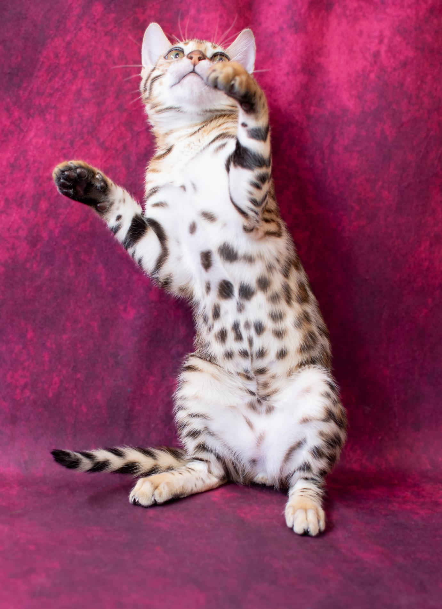
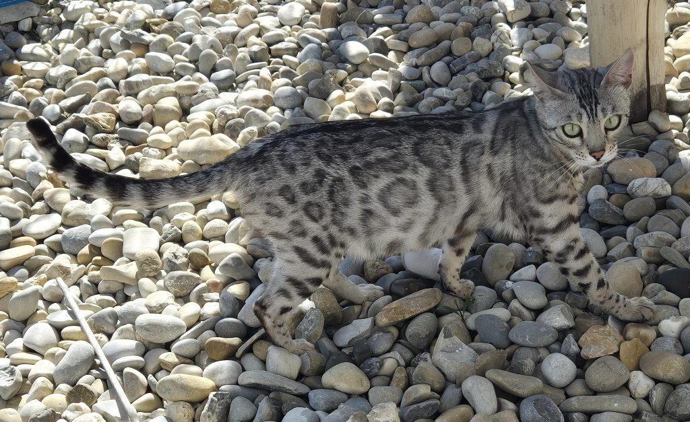
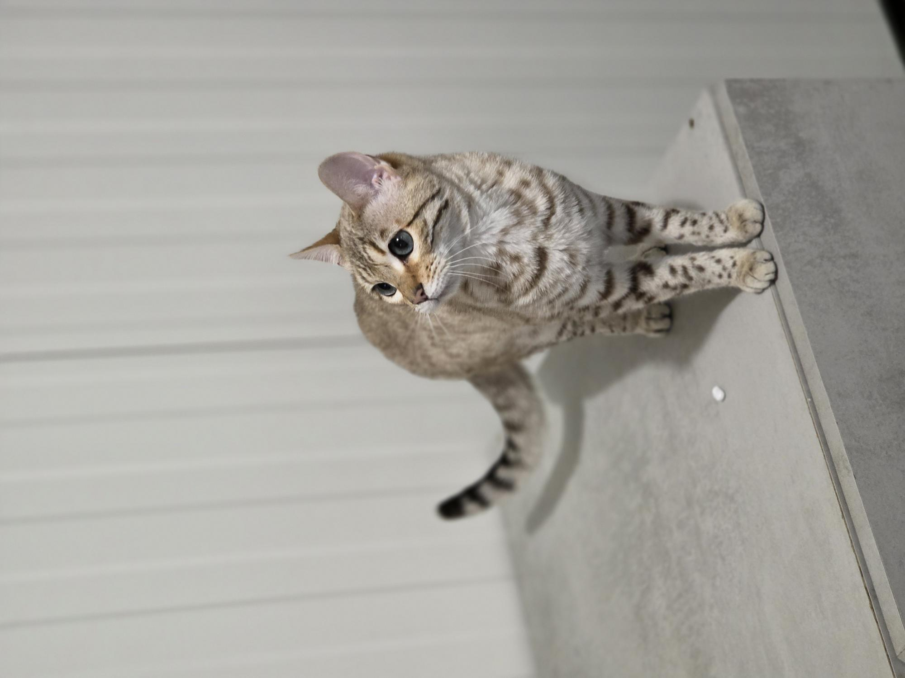
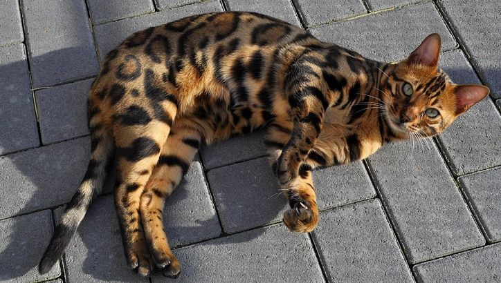
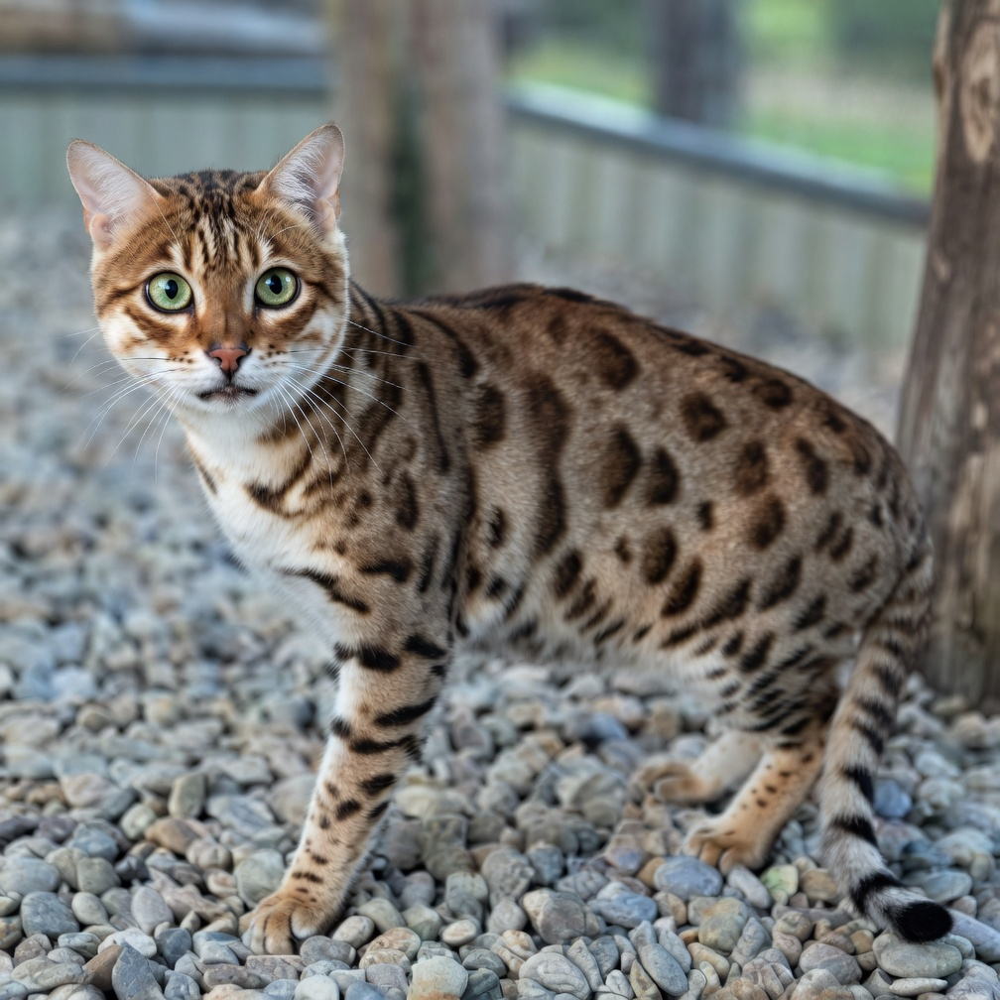
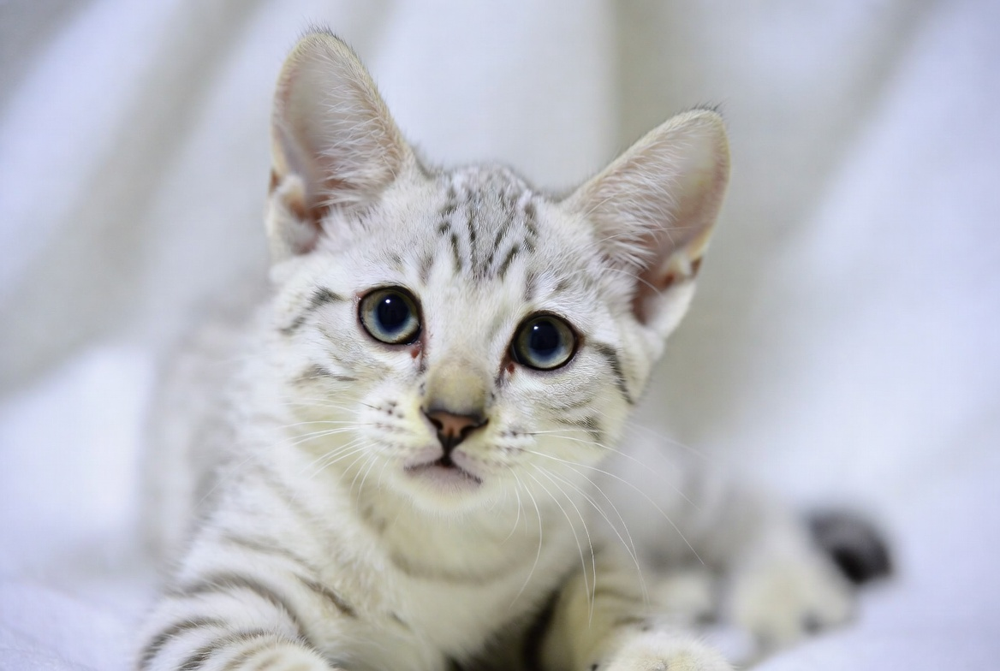
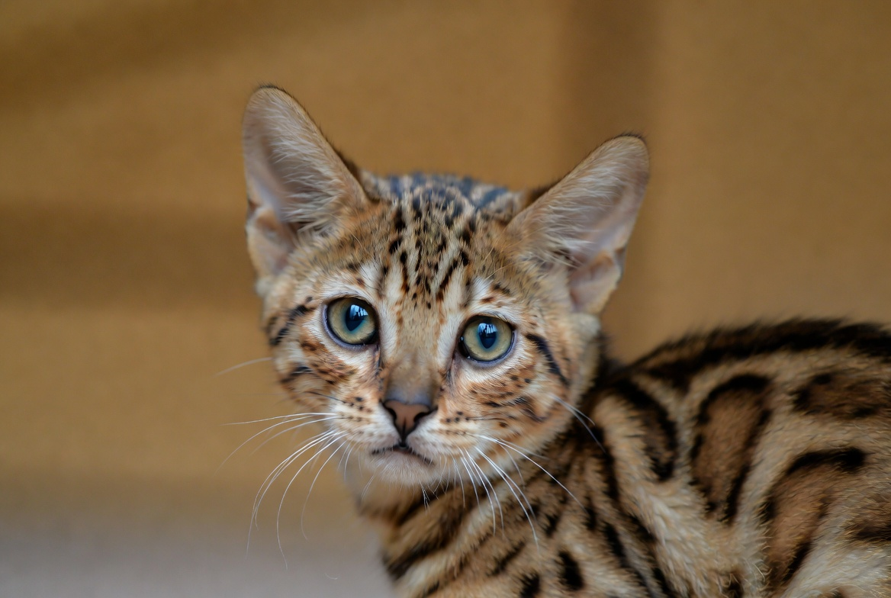
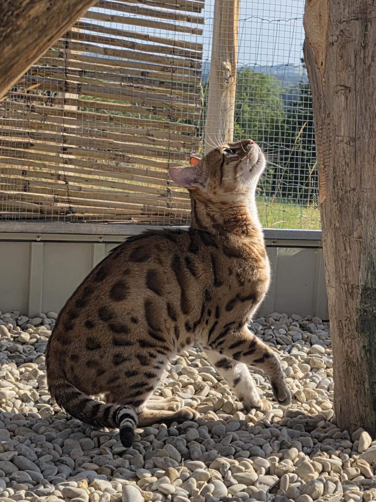
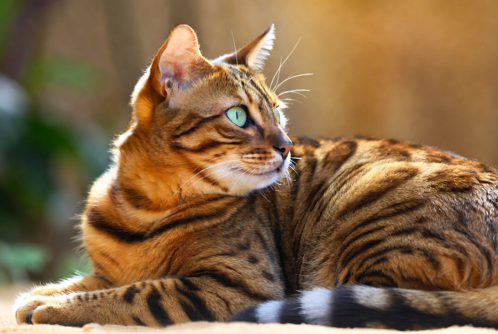
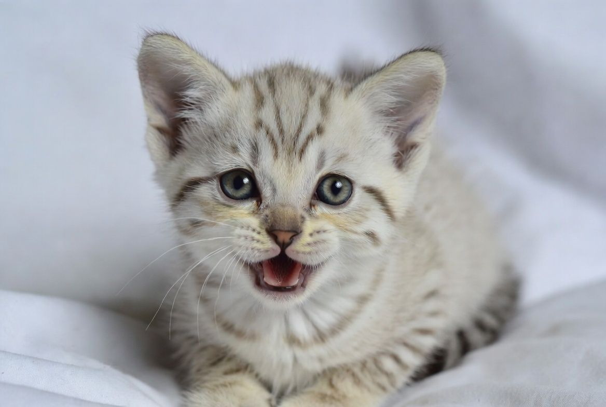
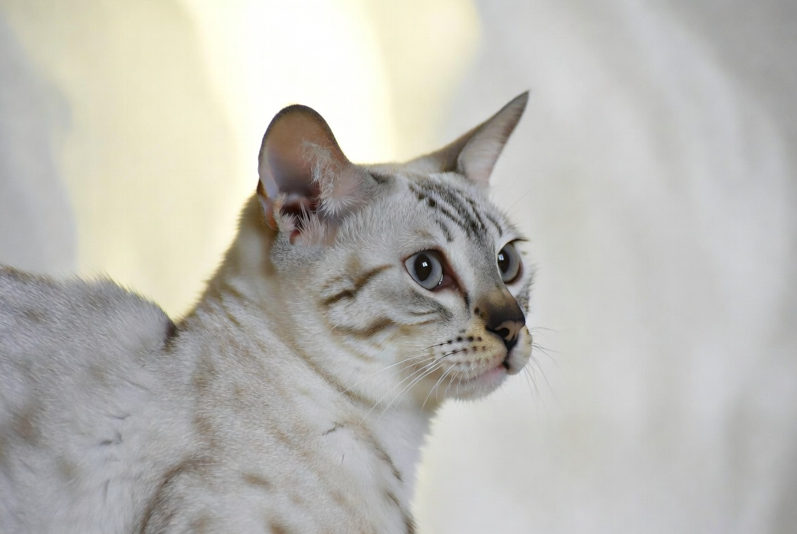
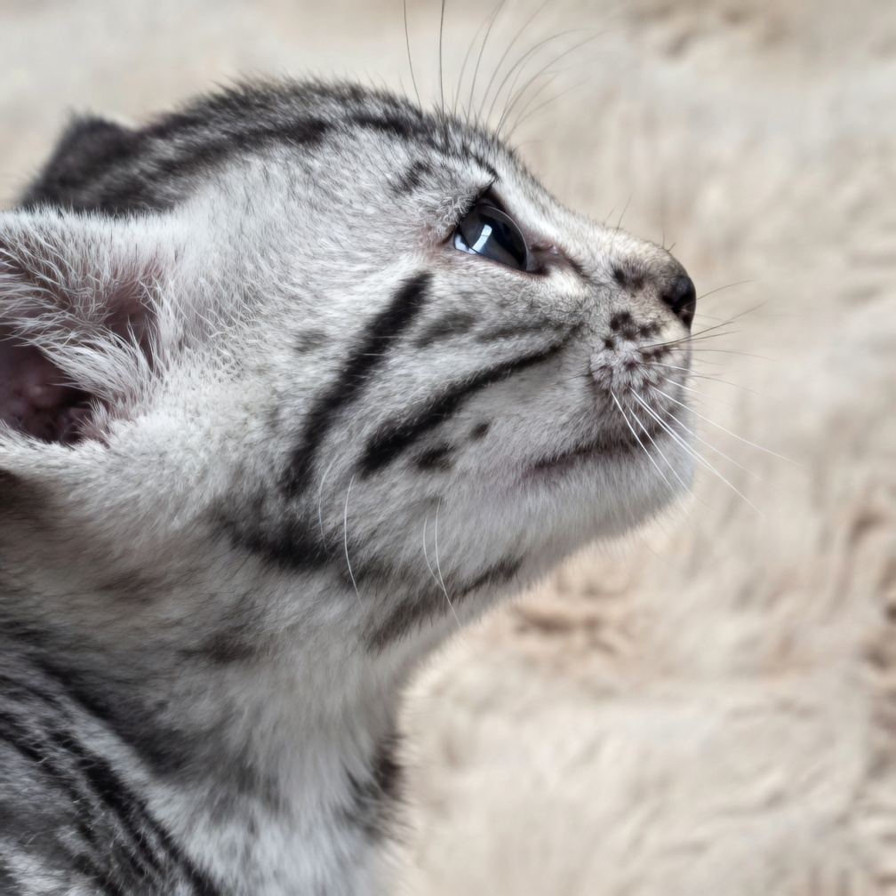
La Chatterie du Diamant Sauvage est spécialisée dans le Bengal, avec une sélection attentive portée sur la robe, le contraste, le caractère, la santé et l’équilibre de chaque chat.
Les chatons grandissent dans un environnement suivi, avec une attention particulière donnée à leur sociabilisation, leur bien-être et leur préparation à rejoindre une famille sérieuse.
Découvrez nos chatons actuellement proposés à l’adoption, leurs photos, leur caractère, leur évolution et toutes les informations utiles pour préparer leur arrivée.
Découvrez nos chatons actuellement proposés à l’adoption, leurs photos, leur caractère, leur évolution et toutes les informations utiles pour préparer leur arrivée.
Voir les disponibilitésSuivez nos prochaines naissances, les mariages prévus et les possibilités de réservation auprès de la chatterie.
De leurs premiers jours à leur départ, suivez l’évolution de nos petits Bengals à travers leurs photos, leurs découvertes et leurs progrès.
Le Bengal séduit par son allure de petit léopard, ses rosettes, son contraste, son intelligence et son tempérament très interactif. C’est un chat élégant, joueur, curieux et proche de l’humain.
Découvrir la raceNous attachons une grande importance à offrir à chaque famille un accompagnement sérieux et transparent. De la première prise de contact jusqu’au départ du chaton, chaque étape est pensée pour garantir confiance, sérénité et bien-être.
À travers chaque image, découvrez l’élégance, le regard, les robes et les attitudes uniques de nos Bengals, élevés dans un environnement doux et attentionné.
La Chatterie du Diamant Sauvage s’inscrit dans une démarche sérieuse autour du Bengal : suivi des lignées, sélection attentive, santé, sociabilisation et accompagnement des familles.
Nous serons ravis d’échanger avec vous, de répondre à vos questions et de vous accompagner dans votre projet d’adoption avec sérieux, bienveillance et passion.
Contacter la chatterie